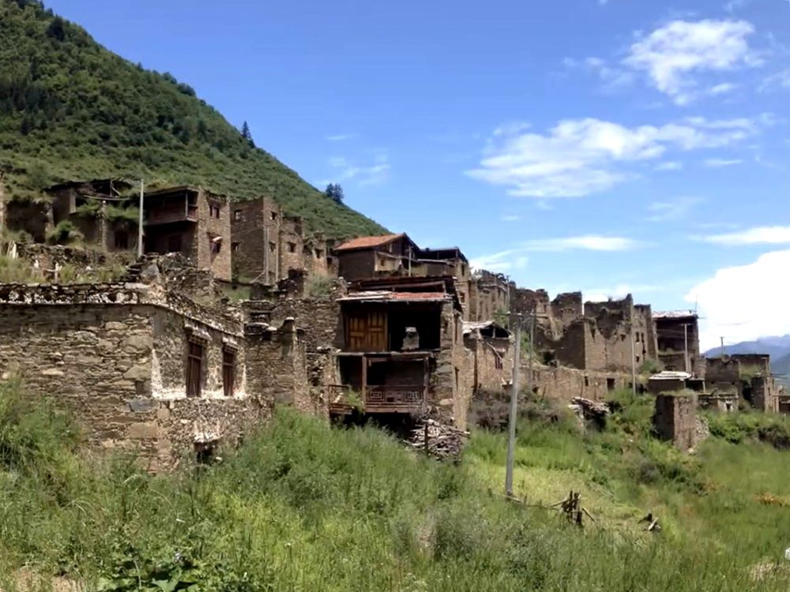
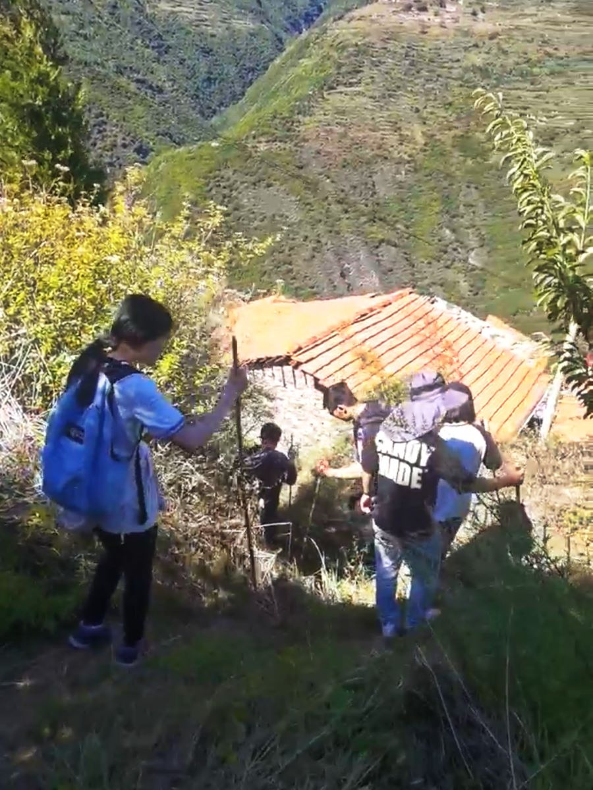
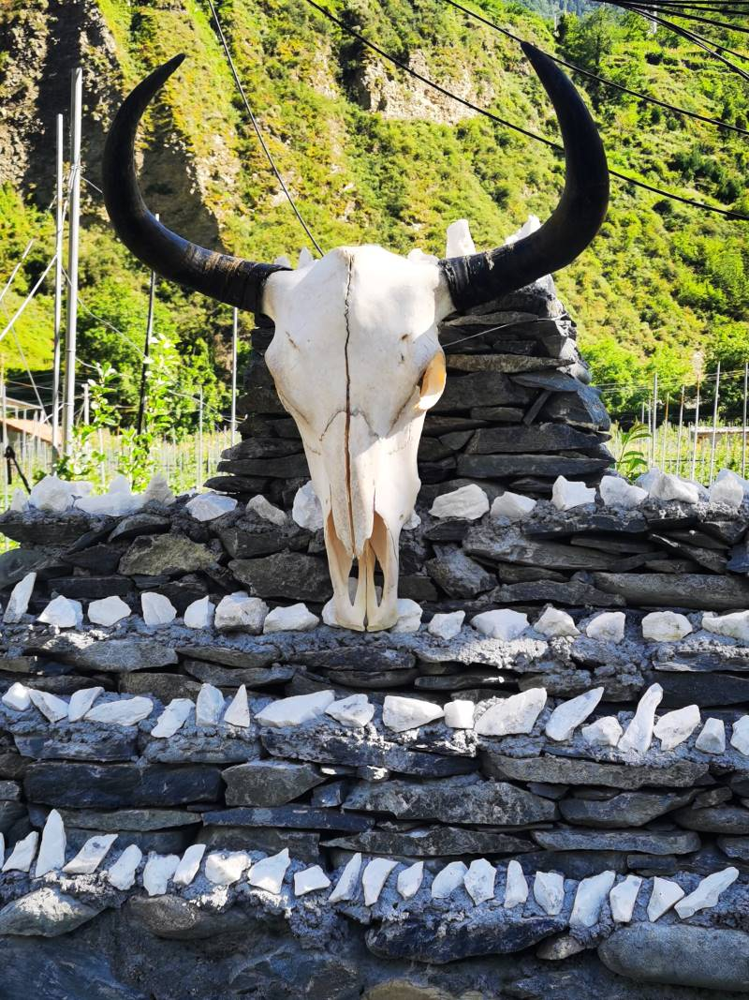
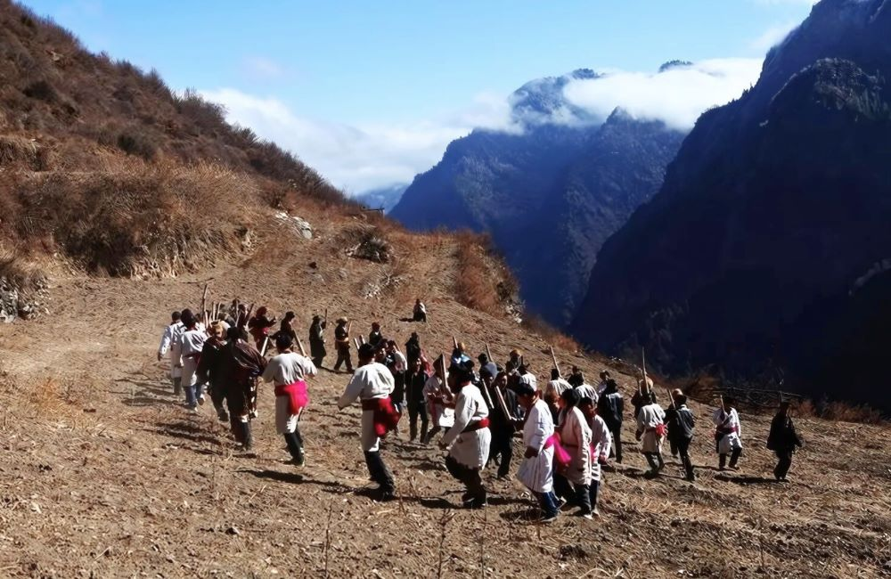

Mountainside Rma village

Heading to Rma village

Goat worship and Pantheism- The totem of the Rma tribe, the sheep head stands on top of a tower of white stones symbolizing various deities.

Villagers gathering on the djugha (terraced field)Every household furnishes a fire pit on the ground floor.Salang dance: an intangible cultural heritage that evolved from sacrificial ritual dance